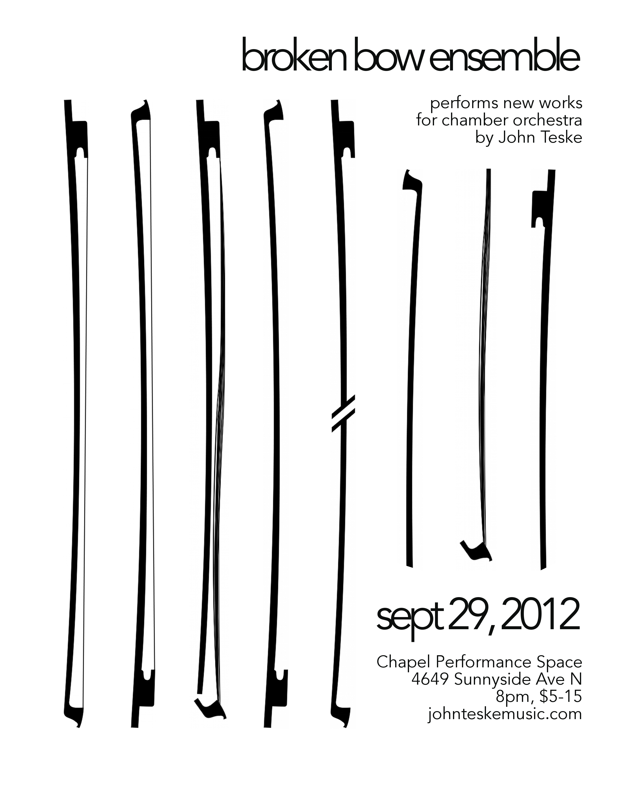

September 29, 2012
Broken Bow Ensemble performs
murmur for chamber orchestra
Chapel Performance Space, Seattle

watch
|
ensemble
violin Alina To Begin Scarseth Caroline Faflak Conner Haffner Dustin Peskuric Emily Price Jonathan Chong Karen Halliburton Karissa Lew Rebecca Huffman Rose McIntosh Tari Nelson-Zaglar viola Brianna Atwell Elisa Clegg Liana Kegley Seth May-Patterson violoncello Brad Hawkins Daniel Mullikin Natalie Hall double bass Abbie Lorensen Marina Christopher flute Jessie Polin oboe Alisyn Christensen clarinet Sabrina Pope horn Greg Campbell bassoon Emma Ashbrook |
support
Aleksandr Alicia Ferri Amber Amelia Apfel Anonymous Art Brown Brynn Watson Claire Bellis Cory Myers David Balatero Don Ankney Edmond Aggabao The Family Crest Ian Bell Julie Alexander Kate Olson Katie Perkis Margaret Carter Maria Scherer Wilson Mark Lewin Matthew Morrison Megat "Faust" Denney Nancy Teske Nan Wilson Nick Poenn Patrick Dunnevant Samantha Boshnack WIT Theatre Company |
bow donations
Begin Scarseth Mara Sedlins Matthew Hopper thank you Amelia Apfel Ian Bell Michael Cepress OmCulture |
{kind=link}